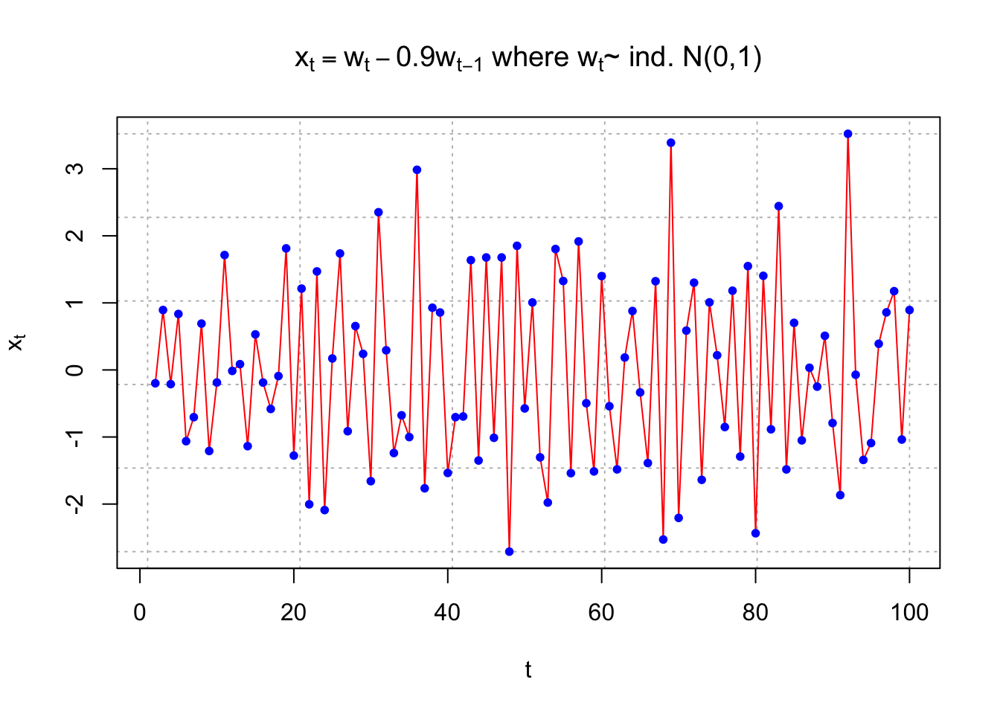
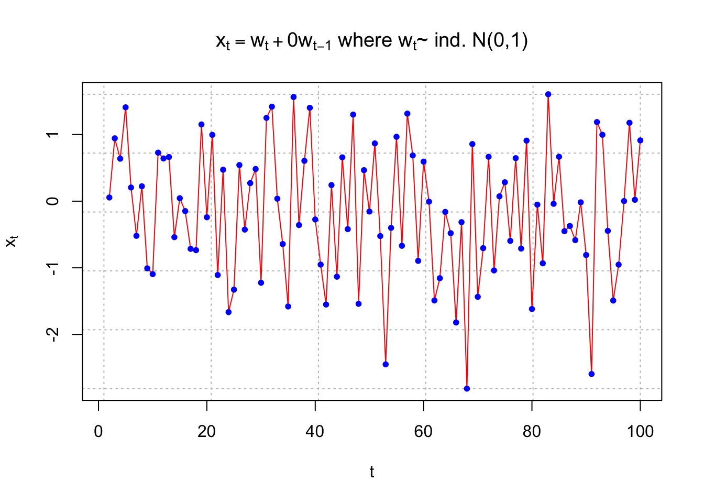

Chapter 5 Dependence
We would like to understand the relationship among all random variables in a time series. In order to do that, we would need to look at the joint distribution function.
Suppose the time series consists of the random variables . The cumulative joint distribution function for these random variables is:
\[ F(c_1, c_2, …, c_n) = P(X_1\leq{c_1},X_2\leq{c_2},...,X_n\leq{c_n}) \]
This can be VERY difficult to examine over the MULTIDIMENSIONS.
The one-dimensional cumulative distributional function is denoted by \(F_t(x) = P(X_t\leq{x})\)for a random variable \(X_t\) at time t. The corresponding probability distribution function is \(f_t(x)=\frac{\partial{F_t(x)}}{\partial{x}}\)
The mean value function is \(\mu_t=E(X_t)=\int{xf_t(x)dx}\)
Important: The interpretation of \(\mu_t\) is that it represents the mean taken over ALL possible events that could have produced \(x_t\). Another way to think about it is suppose that \(x_1,\dots,x_n\) is observed an infinite number of times. Then \(\mu_1\) represents the average value at time 1, \(\mu_2\) represents the average value at time 2, …
Example 5.1 Moving Average
Let \(m_t=\frac{(w_t+w_{t-1}+w_{t-2})}{3}\), where \(w_t\sim\mathrm{i.i.d.}N(0,1)\forall t=1,...,n\)
Then \(\mu_t=E(m_t)=E[\frac{(w_t+w_{t-1}+w_{t-2})}{3}]=\frac{1}{3}[E(w_t)+E(w_{t-1})+E(w_{t-2})]=0\)
Example 5.2 Autoregressions
Let \(x_t = 0.7x_{t-1} + w_t, w_t \sim \mathrm{i.i.d.} N(0,1) ,\forall t = 1, …, n\)
Then \(\mu_t=E(x_t)=E[0.7x_{t-1} + w_t]=0.7E(x_{t-1})+E(w_t)=0.7E(0.7x_{t-2}+w_{t-1})+0=...=0\)
5.1 Autocovariance function
To assess the dependence between two random variables, we need to examine the two-dimensional cumulative distribution function. This can be denoted as \(F(c_s, c_t) = P(X_s\leq{c_s}, X_t\leq{c_t})\)for two different time points s and t.
In another course, you learned about the covariance function which measures the linear dependence between two random variables:For two random variables X and Y, the covariance between them is
\[Cov(X,Y) = E[(X – \mu_x)(Y – \mu_y)] = E(XY) – \mu_x\mu_y, \mu_x = E(X) , \mu_y = E(Y)\]
Because we are interested in linear dependence between two random variables in the same time series, we will examine the autocovariance function:
\[\gamma (s,t) = Cov(X_s, X_t) = E[(X_s – \mu_s)(X_t – \mu_t)]= \int\int(x_s-\mu_s)(x_t-\mu_t)f(x_s,x_t)dx_sdx_t ,\forall s, t \]
where\(f(X_s,X_t)=\frac{\partial{F(X_s,X_t)}}{\partial{X_s}\partial{X_t}}\)and assuming continuous random variables
- If the autocovariance is 0, there is no linear dependence.
- If s = t, the autocovariance is the variance:
\(\gamma (t,t) = E[(X_t-\mu_t)^2]\)
Example 5.3 White Noise
Suppose \(w_t \sim ind. N(0,\sigma^2_w ), t=1,…,n.\)
\[\begin{cases} \gamma(s,t)=\sigma^2_w & \text{if } s=t \\ \gamma(s,t)= 0 & \text{if } s\ne t \end{cases}\]
Example 5.4 Moving Average
Let \(m_t=\frac{w_t+w_{t-1}+w_{t-2}}{3}, w_t \sim ind. N(0,1 ), t=1,…,n\)
\(\gamma (s,t)=E[(m_s-\mu_s)(m_t-\mu_t)]=E[m_sm_t]\) b/c \(\mu_s=\mu_t=0\)
Then \(E[m_sm_t]=E[\frac{w_s+w_{s-1}+w_{s-2}}{3}\frac{w_t+w_{t-1}+w_{t-2}}{3}]=\frac{1}{9}E[(w_s+w_{s-1}+w_{s-2})(w_t+w_{t-1}+w_{t-2})]\)
To find this, we need to examine a few different cases:
- s = t
\[E[m_tm_t] = E[m^2_t] = Var(m_t) + [E(m_t)]^2 = \frac{1}{9}Var(w_t + w_{t-1} + w_{t-2}) + 0\\= \frac{1}{9}{Var(w_t) + Var(w_{t-1}) + Var(w_{t-2})} = \frac{1}{9}(1+1+1) = 3/9\]
- s = t - 1
\[E[m_{t-1}m_t] =\frac{1}{9}E[(w_{t-1} + w_{t-2} + w_{t-3})(w_t + w_{t-1} + w_{t-2})]\\ = \frac{1}{9}[E(w_{t-1})E(w_t) + E(w^2_{t-1}) + E(w_{t-1})E(w_{t-2}) \\ + E(w_{t-2})E(w_t) + E(w_{t-2})E(w_{t-1}) + E(w^2_{t-2}) \\ + E(w_{t-3})E(w_t) + E(w_{t-3})E(w_{t-1}) + E(w_{t-3})E(w_{t-2})]\\ =\frac{1}{9}[0 + 1 + 0 + 0 + 0 + 1 + 0 + 0 + 0]=2/9\] \(E(w^2_{t-1}) = 1\), because \(Var(w_{t-1}) = 1\)
- s = t - 2
\[E[m_{t-2}m_t] = \frac{1}{9}E[(w_{t-2} + w_{t-3} + w_{t-4})(w_t + w_{t-1} + w_{t-2})]\\ = \frac{1}{9}[E(w_{t-2}w_t) + E(w_{t-2}w_{t-1}) + E(w_{t-2}w_{t-2}) +\\ E(w_{t-3}w_t) + E(w_{t-3}w_{t-1}) + E(w_{t-3}w_{t-2})\\ + E(w_{t-4}w_t) + E(w_{t-4}w_{t-1}) + E(w_{t-4}w_{t-2})]\\ =\frac{1}{9}[0 + 0 + 0 + 1 + 0 + 0 + 0 + 0 + 0] =\frac{1}{9}\]
- s = t – 3
\[ E[m_{t-3}m_t] = \frac{1}{9}E[(w_{t-3} + w_{t-4} + w_{t-5})(w_t + w_{t-1} + w_{t-2})]\\ = \frac{1}{9}E[w_{t-3}w_t + w_{t-3}w_{t-1} + w_{t-3}w_{t-2} + w_{t-4}w_t + w_{t-4}w_{t-1} \\ + w_{t-4}w_{t-2} + w_{t-5}w_t + w_{t-5}w_{t-1} + w_{t-5}w_{t-2}]\\ = \frac{1}{9}E[0+ 0 + 0 + 0 + 0 + 0 + 0 + 0 + 0]= 0 \]
Notice that s = t + 1, t + 2, … can be found in a similar manner. Also s = t - 4, t - 5,… can be found. In summary, the autocovariance function is\[\begin{cases} \gamma(s,t)= \frac{3}{9} & \text{if } s=t \\ \gamma(s,t)= \frac{2}{9} & \text{if } |s-t|=1\\ \gamma(s,t)= \frac{1}{9} & \text{if } |s-t|=2\\ \gamma(s,t)= 0 & \text{if } |s-t|\ge 3\\ \end{cases}\]
Notes: - The word “lag” is used to denote the time separation between two values. For example, |s - t| = 1 denotes the lag is 1 and |s - t| = 2 denotes the lag is 2. We will use this “lag” terminology throughout this course.
- The autocovariance depends on the lag, but NOT individual times for the moving average example! This will be VERY, VERY important later!
5.2 Autocorrelation function (ACF)
In another course, the Pearson correlation coefficient was defined to be:
\[\rho=\frac{Cov(X,Y)}{\sqrt{Var(X)Var(Y)}}\]
The reason the correlation coefficient is examined instead of the covariance is that it is always between –1 and 1.
Note the following: - close to 1 means strong, positive linear dependence - close to –1 means strong, negative linear dependence - close to 0 means weak linear dependence.
The autocorrelation is the extension of the Pearson correlation coefficient to time series analysis. The autocorrelation function (ACF) is \[\rho(s,t)=\frac{\gamma (s,t)}{\sqrt{\gamma (s,s)\gamma (t,t)}}\]
where s and t denote two time points. The ACF is also between –1 and 1 and has a similar interpretation as for correlation coefficient.
Notice that \(\gamma (t,t)\) is the variance at time t.
Example 5.5 White Noise
Suppose \(w_t\sim\mathrm{ind} N(0,\sigma^2_w), t=1,...,n\)
\[\begin{cases} \rho(s,t)= \frac{3}{9} & \text{if } s=t \\ \rho(s,t)= \frac{2}{9} & \text{if } s\ne{t}\\ \end{cases}\]
Example 5.6 Moving Average
Let \(m_t=\frac{w_t+w_{t-1}+w_{t-2}}{3}, w_t\sim\mathrm{ind}N(0,1), t=1,...,n\)
\[\begin{cases} \gamma(s,t)= \frac{3}{9} & \text{if } s=t \\ \gamma(s,t)= \frac{2}{9} & \text{if } |s-t|=1\\ \gamma(s,t)= \frac{1}{9} & \text{if } |s-t|=2\\ \gamma(s,t)= 0 & \text{if } |s-t|\ge 3\\ \end{cases}\]
\[\begin{cases} \rho(s,t)= 1 & \text{if } s=t \\ \rho(s,t)= \frac{2}{3} & \text{if } |s-t|=1\\ \rho(s,t)= \frac{1}{3} & \text{if } |s-t|=2\\ \rho(s,t)= 0 & \text{if } |s-t|\ge 3\\ \end{cases}\]
In par, if \(|s-t|=1\), then \(\rho(s,t)=\frac{2/9}{\sqrt{3/9}\sqrt{3/9}}=\frac{2}{3}\)
5.3 Strong positive and negative linear dependence
If there is strong positive linear dependence between \(x_s\) and \(x_t\), the time series will appear smooth in a plot of the series versus time.
If there is strong negative linear dependence between \(x_s\) and \(x_t\), the time series will appear choppy in a plot of the series versus time.
Below are three plots illustrating these statements. I simulated data from different time series models. The autocorrelation for |s - t| = 1 is given for each model. The “estimated” autocorrelation, denoted by \(\hat{\rho}(s,t)\) , is given for that particular data set. The calculation of this estimate will be discussed later.
# Simulate a white noise series
set.seed(4599)
w <- rnorm(n = 100, mean = 0, sd = 1)
head(w)
#> [1] 0.2822308 0.0552224 0.9433917 0.6376982 1.4084635
#> [6] 0.2050981- \(\rho(s,t)=0.4972, \hat{\rho}(s,t)=0.4705\) for |s - t| = 1
dev.new(width = 8, height = 6, pointsize = 10)
#Opens up wider plot window than the default (good for time series plots)
#rho = 0.4972376 we will discuss why this is the numerical value later
x <- filter(x = w, filter = c(1,0.9), method = "convolution", sides = 1)
plot(x = x, ylab = expression(x[t]), xlab = "t", type = "l", col = "red", lwd = 1 ,main = expression(paste(x[t] == w[t] + 0.9*w[t-1], " where ", w[t], "~ ind. N(0,1)")) , panel.first=grid(col = "gray", lty = "dotted"))
points(x = x, pch = 20, col = "blue")
#Pearson correlation between x_t and x_t-1
cor(x = x[3:100], y = x[2:99])
#> [1] 0.4704674
par(pty = "s") # square plot
#用於設置畫圖的視窗的約束比例（plotting window aspect ratio）。具體而言，pty 參數指定了圖形的寬度和高度之間的比例。
# "s" 表示圖形的寬度和高度應該按比例相等，也就是說，產生的圖形將是正方形，而不是預設的矩形。
plot(x = x[3:100], y = x[2:99], ylab = expression(x[t-1]),
xlab = expression(x[t]), col = "red", type = "p",
main = expression(paste(x[t-1], "vs.", x[t])),
panel.first=grid(col = "gray", lty = "dotted"))
par(pty = "m") # Return to normal- \(\rho(s,t)=-0.4972, \hat{\rho}(s,t)=-0.5725\) for |s - t| = 1
#rho = -0.4972376
x <- filter(x = w, filter = c(1,-0.9), method = "convolution", sides = 1)
plot(x = x, ylab = expression(x[t]), xlab = "t", type = "l", col = "red", lwd = 1 ,main = expression(paste(x[t] == w[t] - 0.9*w[t-1], " where ", w[t], "~ ind. N(0,1)")) , panel.first=grid(col = "gray", lty = "dotted"))
points(x = x, pch = 20, col = "blue")
cor(x = x[3:100], y = x[2:99])
#> [1] -0.5725393- \(\rho(s,t)=0, \hat{\rho}(s,t)=-0.1054\) for |s - t| = 1
#rho = 0
x <- filter(x = w, filter = c(1,0), method = "convolution", sides = 1)
plot(x = x, ylab = expression(x[t]), xlab = "t", type = "l", col = "red", lwd = 1 ,main = expression(paste(x[t] == w[t] + 0*w[t-1], " where ", w[t], "~ ind. N(0,1)")) , panel.first=grid(col = "gray", lty = "dotted"))
points(x = x, pch = 20, col = "blue")
cor(x = x[3:100], y = x[2:99])
#> [1] -0.1053843
cor.test(x = x[3:100], y = x[2:99]) #Not significant
#>
#> Pearson's product-moment correlation
#>
#> data: x[3:100] and x[2:99]
#> t = -1.0383, df = 96, p-value = 0.3017
#> alternative hypothesis: true correlation is not equal to 0
#> 95 percent confidence interval:
#> -0.29758249 0.09502345
#> sample estimates:
#> cor
#> -0.1053843Plot 1. is the least choppy (jagged) and plot 2. is the most choppy. Remember what a correlation means.
A positive correlation means that “large” values tend to occur with other “large” values and “small” values tend to occur with other “small” values.
A negative correlation means that “large” values tend to occur with other “small” values and “small” values tend to occur with other “large” values.